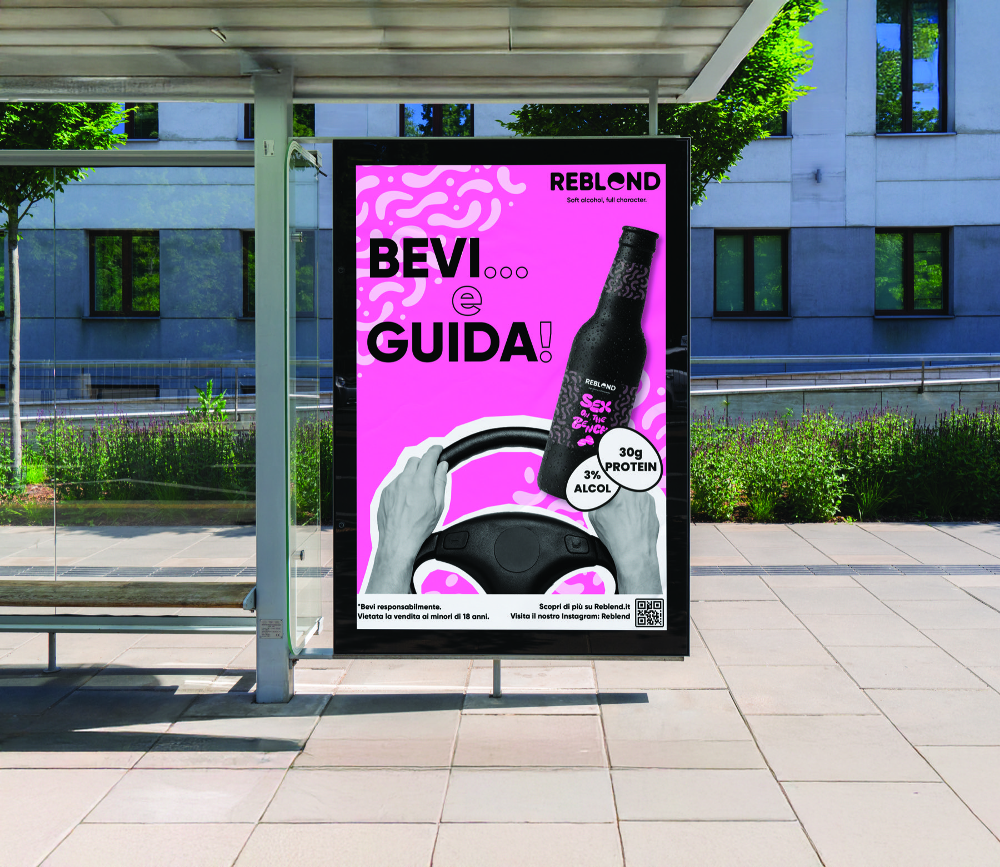
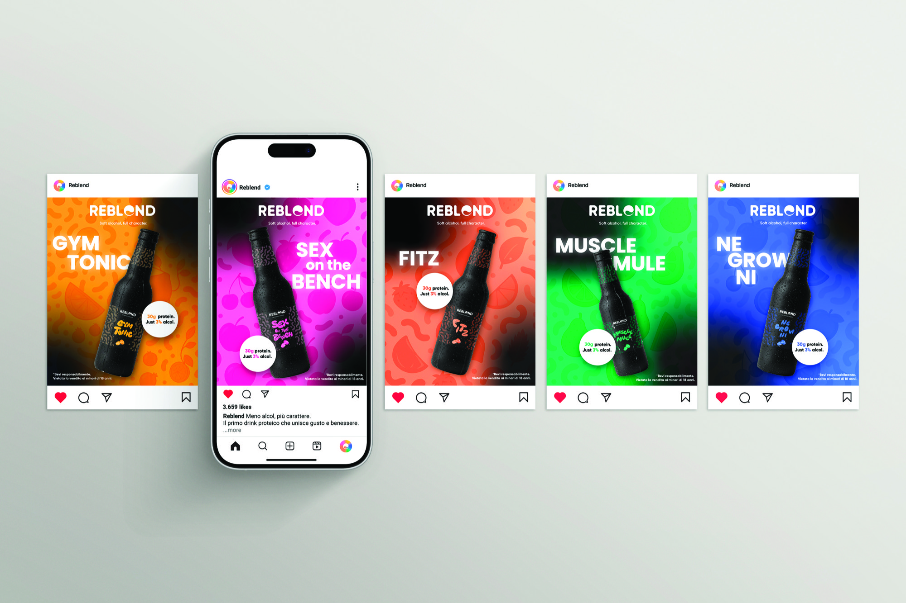
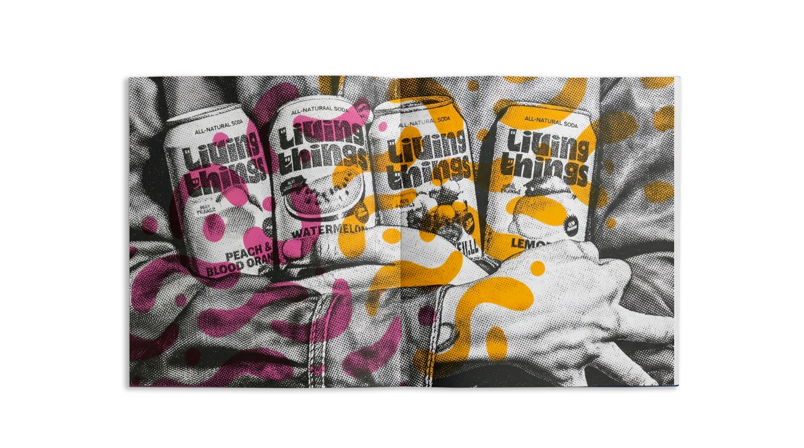
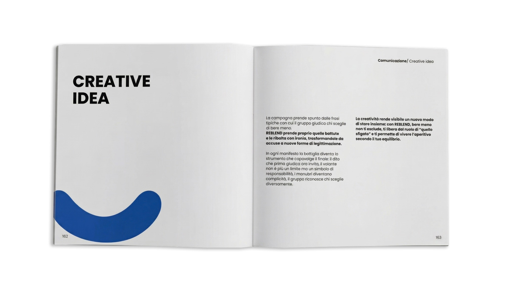
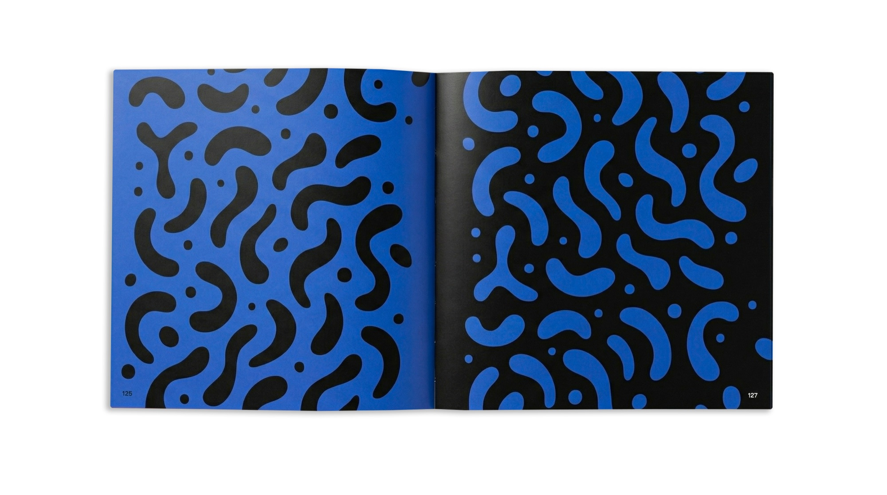
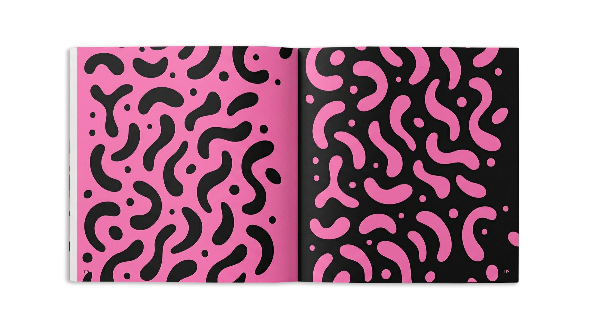
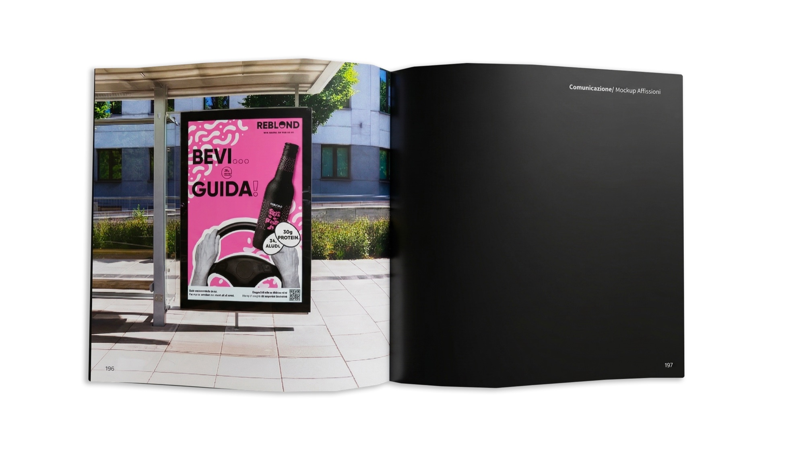
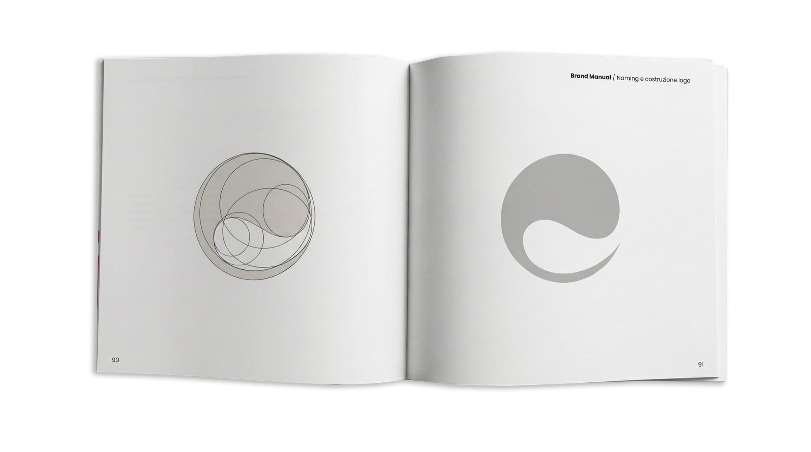
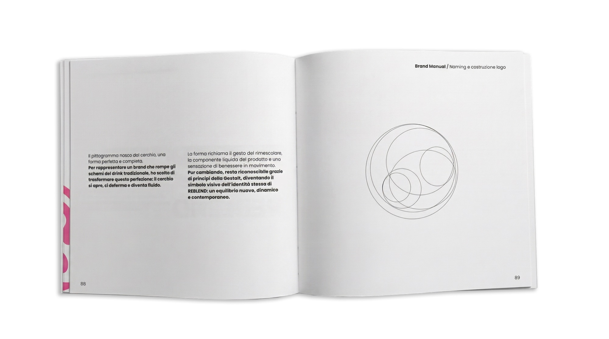
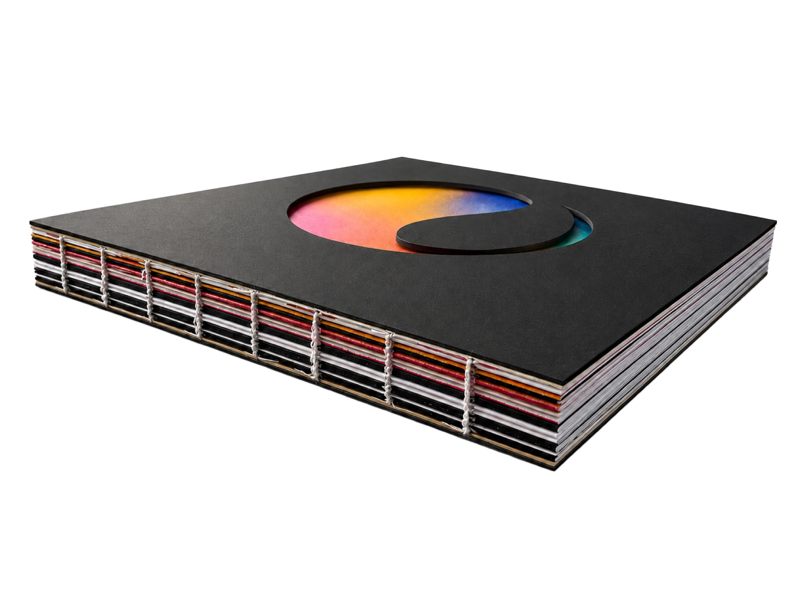

Reblend - progetto tesi
Branding e campagneTesto segnaposto: qui una breve introduzione al progetto di tesi, il brief e qual è stato il tuo ruolo.
1
Titolo della sezione
Testo segnaposto: qui racconti la campagna.





2
Un'altra sezione
Testo segnaposto: qui racconti il brand manual.






